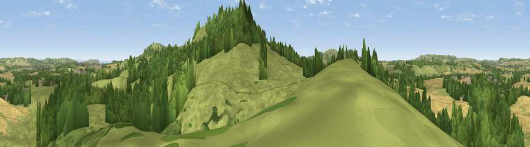

Viewpoint near Godshill
#21969 in England · top 65% of its area beats it · near GodshillThe view, rendered

A 360° render of this exact spot computed from the terrain model, tree cover and land cover — summer colours, afternoon light, calibrated against photographs of famous viewpoints. Real trees, hedges and buildings will differ in detail.
The panorama
Grey silhouette: terrain skyline in each direction (720 bearings, Earth curvature and refraction included). Dashed green: skyline with trees (+15 m) and buildings (+8 m) as obstacles. Blue strip: how far the ground is visible on each bearing.
Where the view opens
Wedge length = distance to the farthest visible ground on that bearing (vegetation-aware). Rings at 10, 25 and 50 km.
What fills the view
55% grassland · 28% woodland · 15% cropland ·
Angular shares of the visible panorama (visual magnitude), not map area. Landscape diversity 0.45 (0–1 Shannon).
Key numbers
More beautiful places nearby
The staircase of upgrades: each row has a higher view potential than everything closer. Driving times are estimates from straight-line distance, calibrated against real road routing — check an actual route before setting out.
| Place | Direction | Drive | Score |
|---|---|---|---|
| Gat Cliff | SSE · 1 km | ~3 min | 79.8 |
| Viewpoint near Wroxall | SSE · 1 km | ~4 min | 83.2 |
| Viewpoint near St. Lawrence | SSE · 4 km | ~8 min | 88.2 |
| Viewpoint near Niton | SW · 6 km | ~13 min | 89.2 |
| Viewpoint near West Bexington | W · 98 km | ~123 min | 89.5 |
| The Knoll | W · 100 km | ~124 min | 91.0 |
50.62651, -1.24888 · source: screening · position refined by local search. Computed location — check access rights before visiting.